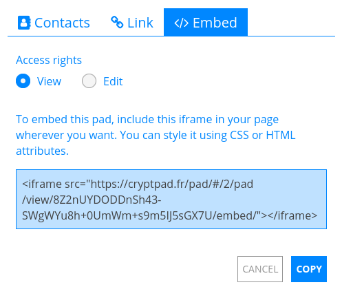
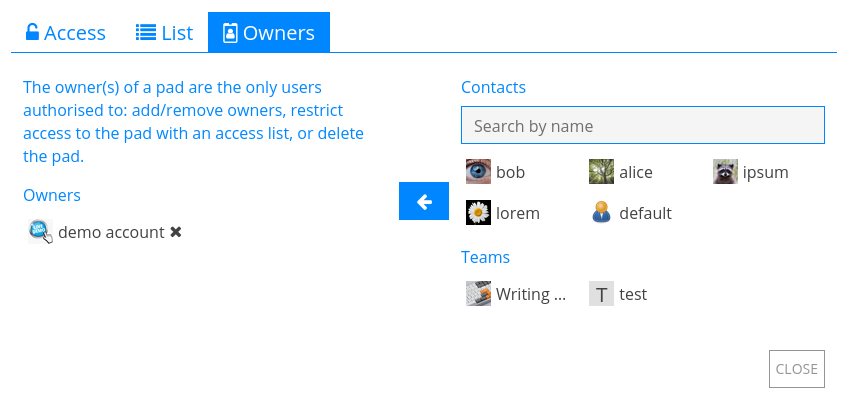

Поделиться / Доступ#
Поделиться и Доступ — это два меню для управления тем, как другие пользователи могут взаимодействовать с Вашими документами на CryptPad.
На панели инструментов документа: Поделиться и Доступ в центре.
Из CryptDrive:
Щелкните правой кнопкой мышипо документу > Поделиться или Доступ.
Поделиться#
Есть три способа поделиться документом: Поделиться с контактами, Поделиться ссылкой и Встраивание в веб-страницы. В каждом случае права доступа могут быть установлены так, чтобы получатель мог редактировать документ или только просматривать его.
Права доступа#
Существует 4 уровня разрешений:
Просмотр: только для чтения без редактирования документа.
Отображение: визуализированный вывод документа, доступный только для чтения в приложениях Код / Markdown и Слайды.
Редактировать: просмотр и внесение изменений в документ.
Просмотр один раз и самоуничтожение: разовый доступ только для чтения. Как только получатель открывает документ по ссылке, оригинальный документ удаляется безвозвратно. :badge_user :Зарегистрированные пользователи
Примечание
Если документ уже хранится в CryptDrive пользователя с правами на редактирование, «ссылка на редактирование» отображается в свойствах документа, даже если пользователь находится в режиме просмотра.
Поделиться с контактами#
Зарегистрированные пользователи
Это рекомендуемый метод для безопасного обмена документами на CryptPad. При предоставлении доступа к документу напрямую контактам ссылки на документы никогда не покидают зашифрованную платформу CryptPad. Это предотвращает утечку данных третьим лицам.

Чтобы поделиться с одним или несколькими контактами:
Поделиться на панели инструментов документа > Контакты.
Щелкните правой кнопкой мышипо документу в CryptDrive > Поделиться > Контакты.
Затем:
Выберите права доступа.
Выберите контакты или группы, с которыми хотите поделиться.
Кнопка Поделиться.
Примечание
Когда Вы поделились документом с контактами они получают уведомление. Когда Вы поделились документом с командой документ добавляется непосредственно в CryptDrive команды.
Поделиться ссылкой#
Вкладка Ссылка содержит ссылки, которыми можно поделиться вне CryptPad. В зависимости от того, как Вы отправляете ссылку, этот способ может представлять угрозу безопасности. Чтобы повысить уровень безопасности, рекомендуется добавить пароль в свой документ, прежде чем делиться ссылкой.

Чтобы скопировать ссылку на документ:
Из документа: Поделиться на панели инструментов > Ссылка.
Из CryptDrive:
Щелкните правой кнопкой мышина документе > Поделиться > Ссылка.
Затем:
Выберите права доступа и дополнительные параметры:
Встроенный вид скрывает панель инструментов и список пользователей.
Предварительный просмотр позволяет проверить, как будет выглядеть ссылка перед отправкой.
Скопируйте ссылку.
Отправьте ссылку.
Встраивание в веб-страницы#
Встраивание позволяет отображать документ CryptPad на веб-странице.

Чтобы встроить документ:
Из документа: Поделиться на панели инструментов > Вставить.
Из CryptDrive:
Щелкните правой кнопкой мышипо документу > Поделиться > Вставить.
затем
Выберите права доступа.
Скопируйте код для встраивания.
Вставьте код на веб-страницу.
Доступ#
Зарегистрированные пользователи
Это меню используется для ограничения доступа к документу или общей папке:
Из документа: Доступ.
Из CryptDrive:
Щелкните правой кнопкой мышипо документу или общей папке > Доступ.
Вкладка «Доступ»#

На этой вкладке собраны все способы доступа к документу:
Срок действия: дата, когда документ будет удален. Эта дата устанавливается при создании документа и не может быть изменена впоследствии.
Пароль: отображается, если установлен пароль. Можно установить новый пароль или изменить существующий пароль.
Владельцы: Список всех владельцев документа.
- Запросы на изменение прав:Запрос прав на редактирование: для пользователей с правами доступа только для чтения.Не отображать запросы доступа к этому документу: скрывает запросы на редактирование этого документа. Владельцы документа
Список доступа: отображает список доступа и указывает, включен ли он.
Уничтожить: окончательное удаление документа.
Список доступа#
Владельцы документа

Список доступа ограничивает доступ к документу. После активации пользователи, которых нет в списке, не cмогут получить доступ к документу, даже если он хранится у них в CryptDrive.
Чтобы включить список доступа, установите флажок Включить список доступа. Владельцы документа находятся в списке по умолчанию и не могут быть удалены из него.
Чтобы добавить контакты или группы в список:
Выберите их в списке контактов справа.
Добавьте их в список с помощью кнопки .
Чтобы удалить пользователя или команду из списка, используйте кнопку рядом с их именем.
Владельцы#

Эта вкладка используется для управления правами собственности на документ. Владельцы документа имеют следующие разрешения:
Включить список доступа.
Включить пароль.
Добавить или удалить других владельцев.
Уничтожить документ.
Право собственности на документ устанавливается при его создании.
Примечание
Если документ создан без владельцев, ни у кого нет прав на управление правом собственности на него. Он не может быть окончательно уничтожен кем-либо, но может быть удален из CryptDrive и будет автоматически уничтожен через 90 дней бездействия.
Владельцы документа
Чтобы добавить пользователей или группы в качестве владельцев:
Выберите их в списке контактов справа.
Добавьте их в список с помощью кнопки .
Чтобы удалить владельца, используйте кнопку рядом с его именем.